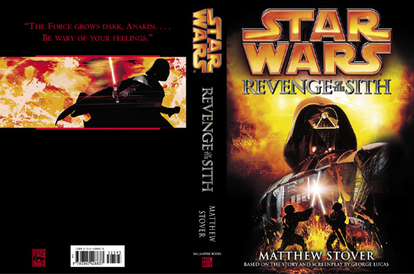

Review: Star Wars: Episode III - Revenge of the Sith (2005)
'All things die, Anakin Skywalker. Even stars burn out…'
★★★★
Not to confuse anyone with the film review, this is a review of the novelization. My review of the film can be found on the "Movie-Reviews" page or by clicking here: Revenge of the Sith.
This novelization exemplifies what a genuine novelization ought to be. While I adored the movie, I always thought the dialogue should have been better. I had memorized the movie and went into the novel knowing the story inside and out. And while reading, I was surprised to see how well-written this novel is. It's the perfect example of what a movie novelization should be.
The plot of the novel is the same as the film. Matthew Stover was following the final shooting script, provided to him by George Lucas, and when given the instructions to create this book, George Lucas wanted the novelizations to be a different experience from the movie. Matthew Stover gave it his all, and the result is one of the best movie novelizations ever. Stover also made additions to the book. The deleted sequences, the extra dialogue, and plenty more content! After finishing the first draft, Stover sent the draft to George Lucas to see what he thought. Stover was asked the question and he responded, "Though I did not personally watch him do it, I received from LFL a Word document of Revenge of the Sith with Mr Lucas’ edits, which was distinct from the edits I'd already gotten from Sue Rostoni and Howard Roffman and the rest of the LFL crew, and this document was edited in such a detailed fashion that even individual words had been struck off and his preferred replacements inserted, as well as some passages wholly excised and some dialogue replaced with the dialogue from the screenplay. If that's not line editing, I don't know what is. What's in that book is there because Mr. Lucas wanted it to be there. What's not in that book is not there because Mr. Lucas wanted it gone. Period."
After reading this, my perspective of the movie changed wonderfully and spectacularly and for that, I have massive respect for Stover. He turned one of my favorite films into a beautiful novel. I will never look at the film the same way after reading this. Lucas created a masterpiece story and Stover enhanced it. You can tell from this novel what George Lucas had in his mind, just in book form. This book enhances the movie and heightens the appeal of the narrative; thus, I heartily recommend it. This book enhanced my pleasure in the film by enhancing George Lucas' masterful plot.
If you want an example of how well Matthew Stover understands George Lucas' vision, read this quote: “There is selfless love, and there is selfish love. There’s love that’s about you, and there’s love that’s about how I feel about you, and Anakin fails to make that distinction." - Matthew Stover. That's all I'm going to say.
I even commented on Stover's post regarding the ROTS Novelization, and he liked my tweet, retweeted it, and commented. The image is below.
.png)